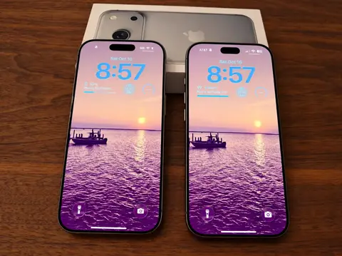
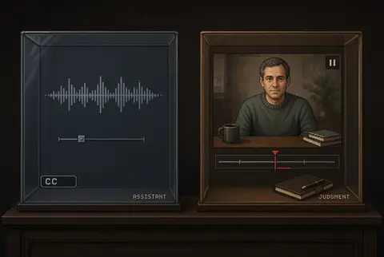

Writing · Nov 20, 2026
4 Tips for Making AI Videos That Feel Like Films
A mug that broke in the wrong place, a reach that changed the story, and a piano performance that worked where sound effects didn’t. Four lessons from making Returning Your Things.
I knew my actors needed character sheets. I didn’t expect my coffee mug to need one, too. In one picture, a blue flower was painted in the middle of the cup. In another, the same flower was attached to the broken handle. Both pictures looked fine until I put them next to each other.
These are the four things I’d do again. If you’d rather see the story before the spoilers, watch Returning Your Things first. The film is 1:54; the walkthrough below is 4:49.
1. Give recurring objects a reference sheet.
I had a sheet for each actor so I could recognize the same two people on a spring rooftop, by the water in summer, and across a kitchen table. The objects needed references for a different reason: they’re how you know whose memory you’re in. A man picks up a piece of pottery in the snow. Cut to the kitchen. You need to recognize that cup without anybody saying a word.
I liked the broken piece. The fix was to go back to the intact mug and move the painted flower closer to the handle. That’s the detail I’d put on a prop sheet next time: not just what the object looks like, but which part of it the audience will see again.

2. Tell the AI what to keep, not just what to change.
In shot 15, the wind takes her hat. I liked the man’s reach, but he was looking to the side instead of at the brim. The next image fixed his gaze and pitched his whole body forward. Now he looked determined to catch it. That was right for the summer memory and wrong for the winter street, where he’s about to let it go.

The most useful part of my next note was “the original picture was fine.” Once I named what to preserve, I could ask for the small change I actually wanted.
3. Lock the pictures before you work on sound.
I made a silent review copy with each shot number and its start time underneath the picture. Instead of scrubbing around for “that bit in the snow,” I could say “shot 15” and keep the discussion about his eyes. I settled the pictures and their timing before trying the sound again.
That also made it easier to turn something down. I tried footsteps in the snow and a gust as the hat blew away. Even with the gust in the right place, I didn’t want it in the finished film.
Getting a sound in sync and wanting to hear it are two different decisions.
4. Choose music for the story, not for every cut.
The first piano score didn’t feel consistent to me. I asked whether there was a classical melody in the public domain that we could use instead. I ended up choosing Donald Betts playing Schumann’s Of Foreign Lands and Peoples. The composition and the performance have separate rights; Musopen released this particular recording into the public domain.
My test was the hat. In summer, he puts it back on her head. In the next picture he’s walking alone, with the hat behind him in the snow. The pianist keeps playing. I didn’t need a new cue to tell me how to feel about that cut.

Its place in the universe
2 documented threads. Each is a real link on a real page, listed with where it is documented.
More writing

Writing · Nov 6, 2026
How to Solve the Bambu Lab Burr Puzzle (Step-by-Step Assembly Guide)
My 2:44 video walkthrough for assembling the six-piece Bambu Lab Burr Puzzle, filmed overhead and solved twice, with links that jump straight to each part of the solution.

Writing · Oct 10, 2026
My iPhone 18 Pro Upgrade Failed. Then My Old Phone Lost Service Too.
I walked into an AT&T store with a working phone. After hours of troubleshooting, I left with no cellular service, a reported 48-hour account lock, and no explanation for how to get connected again.

Writing · Sep 25, 2026
I Used AI to Make My First Video. The AI Editor Was the Part I Trusted Least.
My first talking-head video was made with an iPhone, a script, and more AI tools than I needed. AI was excellent at scripting, captions, and audio cleanup, and least trustworthy when it made editorial decisions for me.